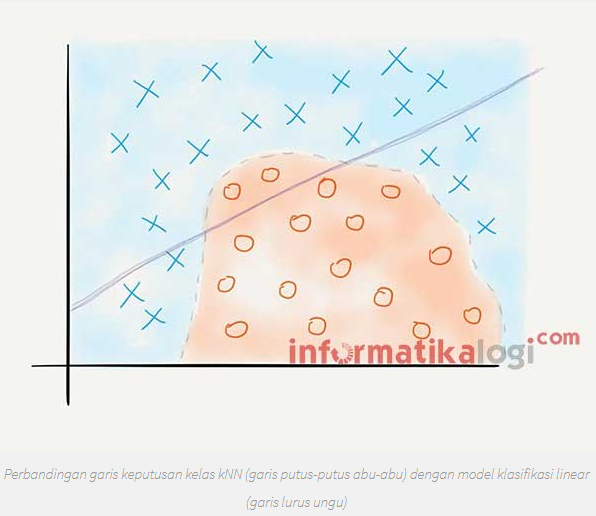
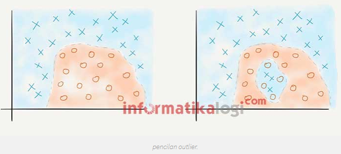
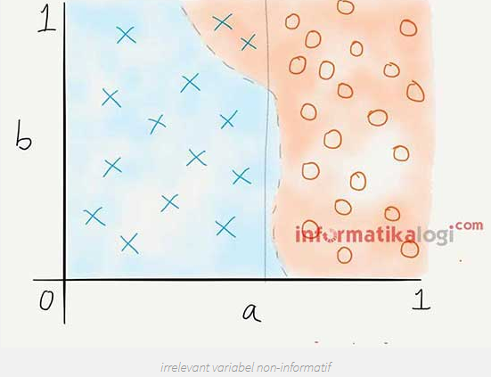
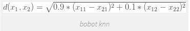
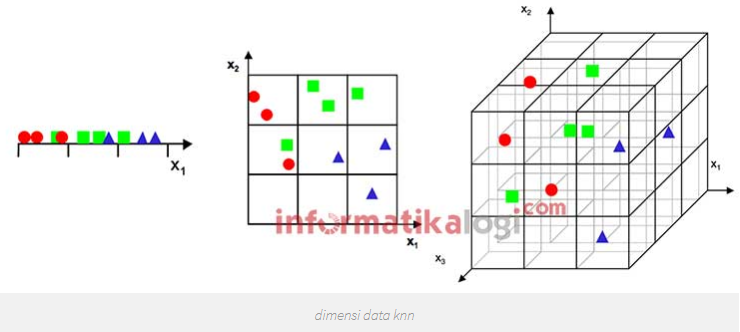
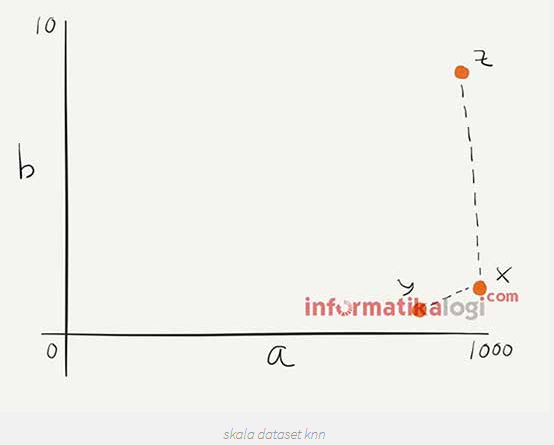
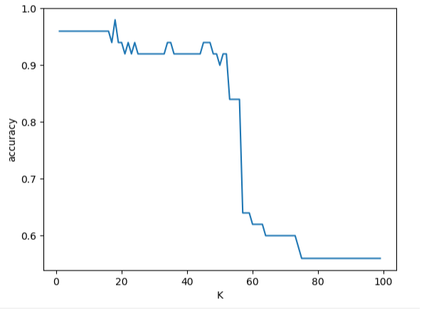

Belajar K-NN Data Iris menggunakan scikit-learn¶
A. K-NN¶
Algoritme k-nearest neighbor (k-NN atau KNN) adalah metode untuk melakukan klasifikasi terhadap objek berdasarkan data pembelajaran yang jaraknya paling dekat dengan objek tersebut. Bertujuan untuk mengklasifikasikan obyek baru berdasarkan atribut dan beberapa sampel dari training data.
Cara Kerja K-NN
K-NN bekerja berdasarkan jarak terpendek dari query instance ke training sample untuk menentukan KNN-nya. Training sample diproyeksikan ke ruang berdimensi banyak, dimana masing-masing dimensi merepresentasikan fitur dari data. Ruang ini dibagi menjadi bagian-bagian berdasarkan klasifikasi training sample. Sebuah titik pada ruang ini ditandai kelas c, jika kelas c merupakan klasifikasi yang paling banyak ditemui pada k buah tetangga terdekat dari titiktersebut. Dekat atau jauhnya tetangga biasanya dihitung berdasarkan Euclidean Distance.
Langkah - langkah yang digunakan dalam metode K-NN :
- Tentukan parameter K (jumlah tetangga paling dekat).
- Hitung kuadrat jarak euclid masing – masing objek terhadap data sample yang diberikan.
- Urutkan objek – objek ke dalam kelompok yang memiliki jarak terkecil.
- Kumpulkan kategori Y (Klasifikasi nearest neighbor).
- Dengan kategori nearest neighbor yang paling banyak, maka dapat diprediksikan nilai query instance yang telah dihitung
B. Kelebihan dan Kekurangan dari Algoritma K-NN¶
-
Kelebihan
-
Sangat nonlinear
- kNN merupakan salah satu algoritma (model) pembelajaran mesin yang bersifat nonparametrik. Pembahasan mengenai model parametrik dan model nonparametrik bisa menjadi artikel sendiri, namun secara singkat, definisi model nonparametrik adalah model yang tidak mengasumsikan apa-apa mengenai distribusi instance di dalam dataset. Model nonparametrik biasanya lebih sulit diinterpretasikan, namun salah satu kelebihannya adalah garis keputusan kelas yang dihasilkan model tersebut bisa jadi sangat fleksibel dan nonlinear.

Pada ilustrasi di atas, kNN dapat melakukan klasifikasi dengan tepat karena garis keputusan kelasnya nonlinear.
-
Mudah dipahami dan diimplementasikan
- Dari paparan yang diberikan dan penjelasan cara menghitung jarak dalam artikel ini, cukup jelas bahwa algoritma kNN mudah dipahami dan juga mudah dimplementasikan. Untuk mengklasifikasi instance x menggunakan kNN, kita cukup mendefinisikan fungsi untuk menghitung jarak antar-instance, menghitung jarak x dengan semua instance lainnya berdasarkan fungsi tersebut, dan menentukan kelas x sebagai kelas yang paling banyak muncul dalam k instance terdekat.
-
Kekurangan
-
Perlu menunjukkan parameter K (jumlah tetangga terdekat)
- Tidak menangani nilai hilang (missing value) secara implisit
- Jika terdapat nilai hilang pada satu atau lebih variabel dari suatu instance, perhitungan jarak instance tersebut dengan instance lainnya menjadi tidak terdefinisi. Bagaimana coba, menghitung jarak dalam ruang 3-dimensi jika salah satu dimensi hilang? Karenanya, sebelum menerapkan kNN kerap dilakukan imputasi untuk mengisi nilai-nilai hilang yang ada pada dataset. Contoh teknik imputasi yang paling umum adalah mengisi nilai hilang pada suatu variabel dengan nilai rata-rata variabel tersebut (mean imputation).
- Sensitif terhadap data pencilan (outlier)
- Seperti yang telah dijelaskan Ali pada artikel sebelumnya, kNN bisa jadi sangat fleksibel jika k kecil. Fleksibilitas ini mengakibatkan kNN cenderung sensitif terhadap data pencilan, khususnya pencilan yang terletak di “tengah-tengah” kelas yang berbeda. Lebih jelasnya, perhatikan ilustrasi di bawah. Pada gambar kiri, seluruh instance bisa diklasifikasikan dengan benar ke dalam kelas biru dan jingga. Tetapi, ketika ditambahkan instance biru di antara instance jingga, beberapa instance jingga menjadi salah terklasifikasi.Perlu dipilih k yang tepat untuk mengurangi dampak data pencilan dalam kNN.

-
Rentan terhadap variabel yang non-informatif
-
Meskipun kita telah menstandardisasi rentang variabel, kNN tetap tidak dapat mengetahui variabel mana yang signifikan dalam klasifikasi dan mana yang tidak. Lihat contoh berikut:

Pada ilustrasi di atas, klasifikasi sebetulnya bisa dilakukan menggunakan variabel a saja (perhatikan garis vertikal yang memisahkan kedua kelas secara linear). Namun, kNN tidak dapat mengetahui bahwa variabel b tidak informatif. Alhasil, dua instance kelas biru terklasifikasi dengan salah, karena kedua instance tersebut dekat dengan instance kelas jingga dalam dimensi b. Andaikan kita hanya menggunakan variabel a dan membuang variabel b, semua instance akan terklasifikasi dengan tepat.Pemilihan variabel sebelum menerapkan kNN dapat membantu menangani permasalahan di atas. Selain itu, kita juga bisa memberi bobot pada variabel dalam perhitungan jarak antar-instance. Variabel yang kita tahu noninformatif kita beri bobot yang kecil, misalnya:

- Rentan terhadap dimensionalitas yang tinggi
- Berbagai permasalahan yang timbul dari tingginya dimensionalitas (baca: banyaknya variabel) menimpa sebagian besar algoritma pembelajaran mesin, dan kNN adalah salah satu algoritma yang paling rentan terhadap tingginya dimensionalitas. Hal ini karena semakin banyak dimensi, ruang yang bisa ditempati instance semakin besar, sehingga semakin besar pula kemungkinan bahwa nearest neighbour dari suatu instance sebetulnya sama sekali tidak “near“.

Masalah tingginya dimensionalitas (terkadang) bisa diatasi dengan pemilihan variabel atau rekayasa fitur, misalnya dengan PCA.
- Rentan terhadap perbedaan rentang variabel
- Dalam perhitungan jarak antar-instance, kNN menganggap semua variabel setara atau sama penting (lihat bagian penjumlahan pada rumus perhitungan jarak di atas). Jika terdapat variabel p yang memiliki rentang jauh lebih besar dibanding variabel-variabel lainnya, maka perhitungan jarak akan didominasi oleh p. Misalkan ada dua variabel, a dan b, dengan rentang variabel a 0 sampai 1.000 dan rentang variabel b 0 sampai 10. Kuadrat selisih dua nilai variabel b tidak akan lebih dari 100, sedangkan untuk variabel a kuadrat selisihnya bisa mencapai 1.000.000. Hal ini bisa mengecoh kNN sehingga kNN menganggap a tidak membawa pengaruh dalam perhitungan jarak karena rentangnya sangat besar dibanding rentang b.Ilustrasinya diberikan di bawah ini. Manakah yang merupakan nearest neighbour dari instance x? Jika dilihat dari “kacamata” komputer, nearest neighbour x bukanlah y, melainkan z, Mengapa? Untuk mengatasi perbedaan rentang, biasanya dilakukan preproses berupa standardisasi rentang semua variabel sebelum menerapkan algoritma kNN. Contohnya yaitu melalui operasi centre-scale atau operasi min-max.

- Nilai komputasi yang tinggi.
- Untuk mengklasifikasi sebuah instance x, kNN harus menghitung jarak antara x dengan semua instance lain dalam dataset yang kita miliki. Dengan kata lain, kompleksitas waktu klasifikasi kNN berbanding lurus dengan jumlah instance latih. Jika dataset yang kita miliki berukuran besar (terdiri dari banyak instance dan/atau banyak variabel), proses ini bisa jadi sangat lambat. Bayangkan, jika kita punya 10.000 instance dengan masing-masing 20 variabel dan kita ingin mengklasifikasi 100 instance baru (instance uji), maka total operasi yang harus dilakukan menjadi:**(100 instance uji x 10.000 instance latih) x 20 variabel/instance x 2 operasi/variabel = 40 juta operasi**Beberapa cara pengindexan (K-D tree) dapat digunakan untuk mereduksi biaya komputasi.
C. K-NN Data Iris¶
Dataset iris memiliki 50 sampel untuk setiap spesies bunga Iris yang berbeda (total 150). Untuk setiap sampel kami memiliki panjang sepal, lebar dan panjang kelopak dan lebar serta nama spesies (kelas / label).
Mengklasifikasikan spesies bunga Iris berdasarkan panjang sepal, lebar sepal, panjang kelopak dan lebar kelopak¶
Data iris ini berbentuk .csv, setiap yang akan diamati mempunyai 4 fitur dan jenis spesies iris yang dimasukkan ke dalam python:
from sklearn import datasetsMuat kumpulan data Iris dan periksa fitur-fiturnyapython:
iris=datasets.load_iris()
print(iris.data)
print(iris.target)
from sklearn.model_selection import train_test_split
x_train, x_test, y_train, y_test=train_test_split(iris.data,iris.target,test_size=0.33)Import K-NN Classifier
from sklearn.neighbors import KNeighborsClassifier
clf=KNeighborsClassifier(n_neighbors=3).fit(x_train,y_train)
from sklearn.metrics import accuracy_score
print("accuracy is ")
print(accuracy_score(y_test,clf.predict(x_test)))Import matplotlib.pyplot
import matplotlib.pyplot as pltHitung Classifier dan Akurasi
accuracy_values=[]
for x in range(1,x_train.shape[0]):
clf=KNeighborsClassifier(n_neighbors=x).fit(x_train,y_train)
accuracy=accuracy_score(y_test,clf.predict(x_test))
accuracy_values.append([x,accuracy])
passImport numpy (accuracy_values)
import numpy as np
accuracy_values=np.array(accuracy_values)
plt.plot(accuracy_values[:,0],accuracy_values[:,1])
plt.xlabel("K")
plt.ylabel("accuracy")
plt.show()Output :
[[5.1 3.5 1.4 0.2]
[4.9 3. 1.4 0.2]
[4.7 3.2 1.3 0.2]
[4.6 3.1 1.5 0.2]
[5. 3.6 1.4 0.2]
[5.4 3.9 1.7 0.4]
[4.6 3.4 1.4 0.3]
[5. 3.4 1.5 0.2]
[4.4 2.9 1.4 0.2]
[4.9 3.1 1.5 0.1]
[5.4 3.7 1.5 0.2]
[4.8 3.4 1.6 0.2]
[4.8 3. 1.4 0.1]
[4.3 3. 1.1 0.1]
[5.8 4. 1.2 0.2]
[5.7 4.4 1.5 0.4]
[5.4 3.9 1.3 0.4]
[5.1 3.5 1.4 0.3]
[5.7 3.8 1.7 0.3]
[5.1 3.8 1.5 0.3]
[5.4 3.4 1.7 0.2]
[5.1 3.7 1.5 0.4]
[4.6 3.6 1. 0.2]
[5.1 3.3 1.7 0.5]
[4.8 3.4 1.9 0.2]
[5. 3. 1.6 0.2]
[5. 3.4 1.6 0.4]
[5.2 3.5 1.5 0.2]
[5.2 3.4 1.4 0.2]
[4.7 3.2 1.6 0.2]
[4.8 3.1 1.6 0.2]
[5.4 3.4 1.5 0.4]
[5.2 4.1 1.5 0.1]
[5.5 4.2 1.4 0.2]
[4.9 3.1 1.5 0.2]
[5. 3.2 1.2 0.2]
[5.5 3.5 1.3 0.2]
[4.9 3.6 1.4 0.1]
[4.4 3. 1.3 0.2]
[5.1 3.4 1.5 0.2]
[5. 3.5 1.3 0.3]
[4.5 2.3 1.3 0.3]
[4.4 3.2 1.3 0.2]
[5. 3.5 1.6 0.6]
[5.1 3.8 1.9 0.4]
[4.8 3. 1.4 0.3]
[5.1 3.8 1.6 0.2]
[4.6 3.2 1.4 0.2]
[5.3 3.7 1.5 0.2]
[5. 3.3 1.4 0.2]
[7. 3.2 4.7 1.4]
[6.4 3.2 4.5 1.5]
[6.9 3.1 4.9 1.5]
[5.5 2.3 4. 1.3]
[6.5 2.8 4.6 1.5]
[5.7 2.8 4.5 1.3]
[6.3 3.3 4.7 1.6]
[4.9 2.4 3.3 1. ]
[6.6 2.9 4.6 1.3]
[5.2 2.7 3.9 1.4]
[5. 2. 3.5 1. ]
[5.9 3. 4.2 1.5]
[6. 2.2 4. 1. ]
[6.1 2.9 4.7 1.4]
[5.6 2.9 3.6 1.3]
[6.7 3.1 4.4 1.4]
[5.6 3. 4.5 1.5]
[5.8 2.7 4.1 1. ]
[6.2 2.2 4.5 1.5]
[5.6 2.5 3.9 1.1]
[5.9 3.2 4.8 1.8]
[6.1 2.8 4. 1.3]
[6.3 2.5 4.9 1.5]
[6.1 2.8 4.7 1.2]
[6.4 2.9 4.3 1.3]
[6.6 3. 4.4 1.4]
[6.8 2.8 4.8 1.4]
[6.7 3. 5. 1.7]
[6. 2.9 4.5 1.5]
[5.7 2.6 3.5 1. ]
[5.5 2.4 3.8 1.1]
[5.5 2.4 3.7 1. ]
[5.8 2.7 3.9 1.2]
[6. 2.7 5.1 1.6]
[5.4 3. 4.5 1.5]
[6. 3.4 4.5 1.6]
[6.7 3.1 4.7 1.5]
[6.3 2.3 4.4 1.3]
[5.6 3. 4.1 1.3]
[5.5 2.5 4. 1.3]
[5.5 2.6 4.4 1.2]
[6.1 3. 4.6 1.4]
[5.8 2.6 4. 1.2]
[5. 2.3 3.3 1. ]
[5.6 2.7 4.2 1.3]
[5.7 3. 4.2 1.2]
[5.7 2.9 4.2 1.3]
[6.2 2.9 4.3 1.3]
[5.1 2.5 3. 1.1]
[5.7 2.8 4.1 1.3]
[6.3 3.3 6. 2.5]
[5.8 2.7 5.1 1.9]
[7.1 3. 5.9 2.1]
[6.3 2.9 5.6 1.8]
[6.5 3. 5.8 2.2]
[7.6 3. 6.6 2.1]
[4.9 2.5 4.5 1.7]
[7.3 2.9 6.3 1.8]
[6.7 2.5 5.8 1.8]
[7.2 3.6 6.1 2.5]
[6.5 3.2 5.1 2. ]
[6.4 2.7 5.3 1.9]
[6.8 3. 5.5 2.1]
[5.7 2.5 5. 2. ]
[5.8 2.8 5.1 2.4]
[6.4 3.2 5.3 2.3]
[6.5 3. 5.5 1.8]
[7.7 3.8 6.7 2.2]
[7.7 2.6 6.9 2.3]
[6. 2.2 5. 1.5]
[6.9 3.2 5.7 2.3]
[5.6 2.8 4.9 2. ]
[7.7 2.8 6.7 2. ]
[6.3 2.7 4.9 1.8]
[6.7 3.3 5.7 2.1]
[7.2 3.2 6. 1.8]
[6.2 2.8 4.8 1.8]
[6.1 3. 4.9 1.8]
[6.4 2.8 5.6 2.1]
[7.2 3. 5.8 1.6]
[7.4 2.8 6.1 1.9]
[7.9 3.8 6.4 2. ]
[6.4 2.8 5.6 2.2]
[6.3 2.8 5.1 1.5]
[6.1 2.6 5.6 1.4]
[7.7 3. 6.1 2.3]
[6.3 3.4 5.6 2.4]
[6.4 3.1 5.5 1.8]
[6. 3. 4.8 1.8]
[6.9 3.1 5.4 2.1]
[6.7 3.1 5.6 2.4]
[6.9 3.1 5.1 2.3]
[5.8 2.7 5.1 1.9]
[6.8 3.2 5.9 2.3]
[6.7 3.3 5.7 2.5]
[6.7 3. 5.2 2.3]
[6.3 2.5 5. 1.9]
[6.5 3. 5.2 2. ]
[6.2 3.4 5.4 2.3]
[5.9 3. 5.1 1.8]]
[0 0 0 0 0 0 0 0 0 0 0 0 0 0 0 0 0 0 0 0 0 0 0 0 0 0 0 0 0 0 0 0 0 0 0 0 0
0 0 0 0 0 0 0 0 0 0 0 0 0 1 1 1 1 1 1 1 1 1 1 1 1 1 1 1 1 1 1 1 1 1 1 1 1
1 1 1 1 1 1 1 1 1 1 1 1 1 1 1 1 1 1 1 1 1 1 1 1 1 1 2 2 2 2 2 2 2 2 2 2 2
2 2 2 2 2 2 2 2 2 2 2 2 2 2 2 2 2 2 2 2 2 2 2 2 2 2 2 2 2 2 2 2 2 2 2 2 2
2 2]
accuracy is
0.96
Referensi :
- https://id.wikipedia.org/wiki/KNN
- https://medium.com/bee-solution-partners/cara-kerja-algoritma-k-nearest-neighbor-k-nn-389297de543e
- https://www.advernesia.com/blog/data-science/pengertian-dan-cara-kerja-algoritma-k-nearest-neighbours-knn/
- https://www.academia.edu/31306621/MAKALAH_KNN_K-NEAREST_NEIGHBOUR_
- https://informatikalogi.com/algoritma-k-nn-k-nearest-neighbor/